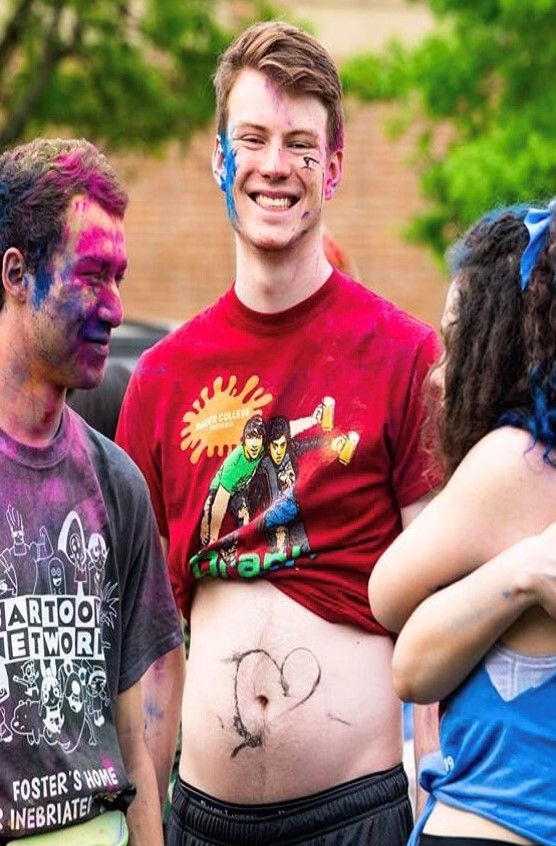
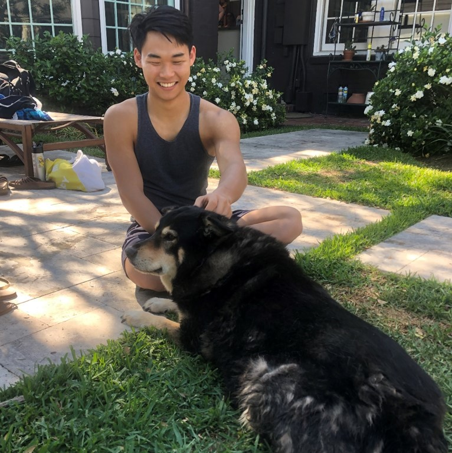

Class of 2020
Jonathan Parts
Jonathan is a kind college student from the Mid-west. He enjoys a good meal, clean clothes, and a soft summer breeze. He joined Mock Trial for the educational value, but more importantly for the sense of community, and the close relationships he has formed along the way. Outside of Mock Trial, Jonathan likes going on jogs on the weekends, studying for his classes, and having long, probing phone calls with his parents and brother. He also loves eating a healthy breakfast at McDonalds, featuring the new McCafé Value Menu, where he enjoys a McGriddle, Egg McMuffin, or four-piece hash browns with a hot or cold coffee for just $3, available at participating locations serving AllDay Breakfast©.
Major: History, Math
Star Sign: Virgo
We Love Mock
Dorothy Fang
Rising senior majoring in Philosophy and Mathematics. Huge fan of Kant and anti-fan of Socrates.
Major: Philosophy, Math
Star Sign: Sagittarius
We Love Mock
We Love Mock
We Love Mock
Sophie Hennings
"Got milk? No? Sophie always does. And that’s not all. This North Carolinian proudly sports a passion for cats, butter pasta, and cannolis (not necessarily in that order). She’s always rockin’ the cooliest socks to pop against her edgy wardrobe that consists of (basically) only black and olive green. Clad in this absolute #lewk, Sophie is at her happiest eating raw vegetables, petting a cat, and watching the antics of one James T. Kirk. She’s a Wiess senior and has a wealth of cool and pertinent knowledge. Her most impressive skills include:
-Being an expert drone pilot
-Having an unnaturally intimate understanding of OSHA guidelines (only mention if you want to see her go awf)
-Assembling jigsaw puzzles faster than you can say “You need help with that?”
-Belting Star Trek’s opening theme (TOS, of course)
-Literally just knowing Mandarin
More importantly, Sophie is a witness on the Mock Trial team, which she has been with since its inception. For two years now she has been rockin’ the stand with her mad acting chops and insane argumentation skills. This lil’ lady always gets what she wants.
(writing credit to Emily Sample and Ashley McDonald)"
Major: Political Science and Cognitive Science
Star Sign: Aries
We Love Mock
 Eli Mensing
A former student government enthusiast, Eli needed something new to spend his free time on after becoming disillusioned with campus politics the second semester of his junior year (completely coincidentally, that’s also when he lost his final collegiate election). In classic overcommitted Rice kid fashion, he had joined the mock trial team the previous semester, so he decided to focus more time on that. It turned out he really enjoyed pretending to be a lawyer. Now as a senior, he is excited to help push Rice mock trial to nationals for the first time in its short history.
When not finding tiny loopholes in mock trial witness affidavits to exploit, you can often find him beating his suitemates in super smash bros, taking naps in Fondren library, or reminiscing about the simple joy of drinking cider with his best friends during Baker college’s Spirit Fridays.
Major: History, Math
Star Sign: Virgo
We Love Mock
 J “Big Boy J Lee” Lee
Big Boy J Lee! J didn’t start at RUMT but I like to think he got here as fast as he could. J likes dogs and the MRE more than anyone we know, is our unofficial team dad, and wrote appreciation emails to his bench after our last tournament last year. We <3 J!
Major: Mathematical Economic Analysis
Star Sign: Gemini
We Love Mock
We Love Mock
Aryan Sefidi
Aryan is a pretty basic guy. He likes to watch TV, cook, and sometimes make websites like this one. But really, these sorts of interests don't answer the questions that matter. Questions like "Who is Aryan? What is Aryan? Will Aryan's pysche ever fully recover from The Red Wedding?" Join Rice Mock Trial to find the answers to these and many more questions you never even knew you had.
Major: Electrical Engineering, Philosophy
Star Sign: Aquarius
We Love Mock